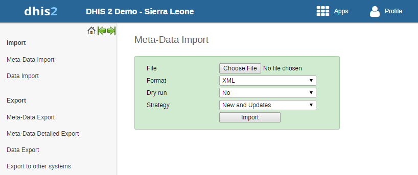
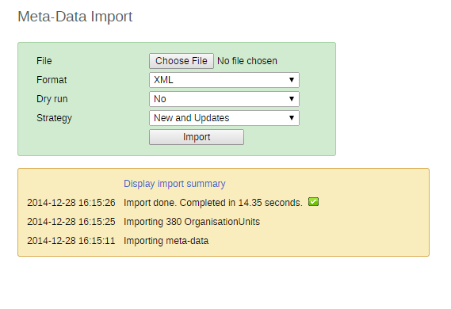
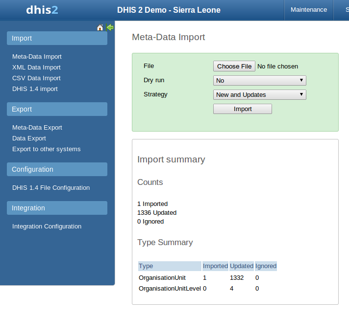
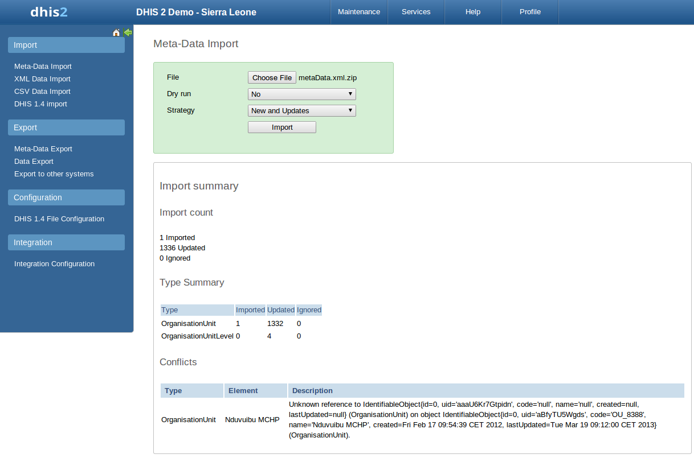

Meta-data objects can be easily imported by accessing Import-Export->Meta-Data import. Select the file to import by pressing "Select" and choose the file from your local file system. When importing XML and JSON files, the system will automatically detect which type of objects which should be imported. When importing CSV metadata, you will need to specify the object type. Consult the corresponding section in this manual on "CSV Metadata import" for more specific information on how the CSV file should be created.
Default import screen
|  |
There are two separate options for importing data.
-
Dry run: This is similar to the old preview option, this will do a dry run import, and give you information about any errors.
-
Strategy: There are three options here, "New and Updates", "New only", and "Update only". New and updates tells the importer to expect both new meta-data, and updates to existing ones. New only will only accept fresh meta-data, usually you would use this on a empty database. Updates only will only allow the meta-data to match meta-data that is already there (same identifiers, new name etc).
![[Note]](../Resources/note.png)
|
Note |
|---|---|
|
It is highly recommend always using the Dry run option when importing data to make sure you keep control over any changes to your meta-data and databases being out of synch on data elements or organisation unit names |
Before doing the import into your database, it is highly recommended that you run the import with the dry run option set to true first. This will enabled you to have a look at how many new, updates, and ignored meta-data there will be. After you have selected your file, set dry run to true, you can now click the import button. After doing this, you will be greeted by this window.
|  |
Here you can see a short summary of what was contained in your import file. To see further details, please click on the "Display import summary" link.
|  |
Here you can see that the import dry run was successful and the import contained 1 new organisation unit, 1332 updated, and 4 organisation unit levels.
Below you can see another example.
|  |
Here you can see that the organisation unit "Nduvuibu MCHP" had a unknown reference to an object with ID "aaaU6Kr7Gtpidn", which means that an object with this ID was not present in your imported file, and it could not be found in the existing database. Its important to note that even if a reference could not be found, the object will still be imported, but you might have to fix this directly in DHIS2 later, if the reference should have pointed to something else.
The DXF2 format currently support matching for two identifiers, the internal DHIS2 identifier (known as a UID), and also using an external identifier called called a "code". When the importer is trying to search for references (like the one above), it will first go to the UID field, and then to the code field. This allows you to import from legacy systems without having a UID for every meta-data object. I.e. if you are importing facility data from a legacy system, you can leave out the ID field completely (DHIS2 will fill this in for you) and the put the legacy systems own identifiers in the code field, this identifier is required to be unique. This not only works for organisation units, but for all kinds of meta-data, allowing for easy import from other systems.
To import CV meta-data go to import-export module and select CSV Meta-Data Import form the left side menu. You must select the object type which your CSV file contains. You can only upload one type of objects at the time. Upload your file and click update. For the CSV format, please visit the Web API chapter > CSV meta-data import in the developer guide.
The GML import function can be used to import data prepared in the Geography Markup Language (GML). GML can be used to update the coordinates (both polygons and points). Once you have prepared your GML file as detailed in the chapter on "Importing coordinates", you can load the file with this function.
Importing the organisation unit hierarchy from GML is not supported. Therefore you should create the organisation unit hierarchy separately, and then use GML to update the coordinates once the hierarchy has been created.